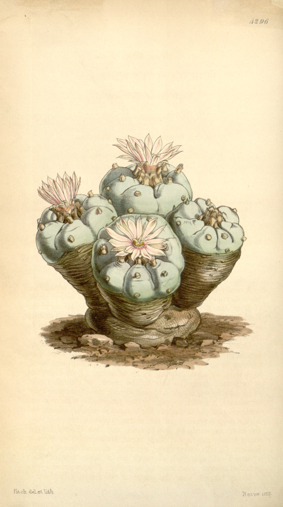

The oldest high in the world
In a dry rockshelter on the Texas side of the Rio Grande, archaeologists found peyote that someone had trimmed, dried, and prepared to eat. They carbon-dated it to about 5,700 years ago. That is older than writing, older than the wheel, older than the pyramids.
For most of human history, the fastest way to an experience people called holy was not prayer, or fasting, or sitting still for twenty years. It was a plant. You ate it, the world came apart and put itself back together a few hours later, and you walked out changed. People did this on purpose, in ceremony, and they built their oldest religions partly around the experience.
This is the chemical path to the mystical state, the oldest and most direct one we know of. For a long stretch of the modern era we treated it as either a crime or a kind of madness. In the last twenty years a slow trickle of serious scientists have started treating it as neither, and a few of their results are genuinely hard to wave away.
What follows is a map, not a recommendation. Most of these substances are illegal where you live, some of them are dangerous, and the field is as full of hype as it is of evidence. The interesting part is that there is now real evidence, and it points somewhere strange.
The puzzle is old. In 1882 the Harvard psychologist William James breathed nitrous oxide, the gas from the dentist's chair, and never quite got over what it showed him. He wrote it down twenty years later, in the only sentence from this whole subject that almost everyone in it has memorized:
Our normal waking consciousness, rational consciousness as we call it, is but one special type of consciousness, whilst all about it, parted from it by the filmiest of screens, there lie potential forms of consciousness entirely different.William James, The Varieties of Religious Experience, 1902
James was not saying the gas made things up. He was saying it pulled back a curtain, and that whatever sat behind the curtain had been there the whole time. That is the claim the entire path makes, and it is the claim we are going to test.
One word, before we start. The careful name for these substances is not "hallucinogen," which means a thing that shows you what is not there. A group of scholars who disliked that word coined a better one in 1979: entheogen, meaning roughly "the divine within." The new name made a bolder claim, that the experience reveals something real rather than something false. Whether that is true is the whole question. The name just picks a side.
The same room, four ways in
People reached the chemical path independently, on different continents, with whatever grew nearby. Four of those traditions matter most, because they are the best documented and because three of them are still alive.
Eleusis, the secret of the ancient world
For nearly 2,000 years, the most educated people in the Greek and Roman world walked to a town near Athens, drank a barley potion called kykeon, spent a night in a hall, and were sworn on penalty of death never to say what they saw. Plato went through it. So did Cicero, who wrote that the Mysteries taught him "not only to live happily, but also to die with a better hope." We still do not know what was in the cup. The most famous guess, from a 1978 book co-written by the man who introduced America to magic mushrooms and the chemist who invented LSD, is that the barley carried ergot, a fungus that makes lysergic acid, the raw material of LSD. It is a tantalizing idea, and it is not proven. Most classicists do not buy it, ergot is also a poison, and nobody has found the recipe. Keep it in the "maybe" column.
Peyote, and a church built to protect it
The oldest sacrament we can actually hold is the peyote in that Texas cave, the cactus in the picture above. Its active ingredient is mescaline. Plains peoples built an all-night ceremony around it, a fire, songs, prayer, and a crescent of earth, and in 1918 they incorporated it as the Native American Church, largely to keep the government from banning it. The protection turned out to be necessary. In 1990 the Supreme Court ruled that a state could fire two church members for using peyote (Employment Division v. Smith), and Congress had to write the religious exemption back into federal law in 1994. The church now has the legal right and a supply crisis: wild peyote grows only in south Texas and northern Mexico, it grows very slowly, and it is being dug up faster than it comes back.
Ayahuasca, and a piece of real chemistry
In the Amazon, the door is a bitter brew called ayahuasca, and it hides a genuine trick. It is made from two plants. A leaf supplies DMT, one of the most powerful psychedelics known. Swallow DMT by itself and an enzyme in your gut destroys it before it does a thing. The second plant, a woody vine, contains a compound that switches that enzyme off, so the DMT survives the gut and reaches the brain. Out of tens of thousands of Amazonian plants, people found the exact two that only work together. Two Brazilian churches, Santo Daime and the UDV, built religions on the brew, and in 2006 the US Supreme Court ruled unanimously that the UDV could import it as a sacrament. It has also turned into a tourist industry, and the unregulated end of that, a stranger with no medical training running a ceremony deep in the jungle, has gotten people hurt and killed far from any hospital.
The mushroom, and what it cost María Sabina
The mushroom door swung open to the West on a single day. On May 13, 1957, Life magazine ran a long article by an American banker, R. Gordon Wasson, describing a night in the mountains of Oaxaca with a Mazatec healer named María Sabina and the mushrooms her people called teonanácatl, "flesh of the gods." Within a year a Swiss chemist had isolated the active molecule and named it psilocybin. Within a few years, seekers were swarming María Sabina's village. Her neighbors blamed her for giving the secret away. She was ostracized, her house was burned, and her son was killed. She said that once the outsiders came, the mushrooms lost their power. It is the pattern of this entire history compressed into one life: the West finds a living tradition, takes what it wants, and leaves a wreck behind.
| Tradition | Source | Active molecule | Roughly how old | In the US now |
|---|---|---|---|---|
| Eleusis ancient Greece | barley kykeon | ergot alkaloids? unproven | ~2,000 yrs, ended ~396 CE | gone |
| Peyote Native American Church | peyote cactus | mescaline | ~5,700 yrs, ongoing | legal for the church |
| Ayahuasca Amazon, Santo Daime, UDV | vine + leaf | DMT + an MAO inhibitor | centuries, ongoing | legal for two churches |
| Mushrooms Mazatec and others | Psilocybe mushrooms | psilocybin | centuries, ongoing | Schedule I, some local reform |
Huxley opens the door, and explains it
The best description of what these doors open onto was written by a nearly blind English novelist sitting in a chair in Los Angeles. In May 1953, Aldous Huxley swallowed four tenths of a gram of mescaline dissolved in a glass of water and waited, watched over by a psychiatrist named Humphry Osmond, who was studying the drug as a chemical model of insanity. Huxley expected gorgeous inner landscapes. Instead he spent the afternoon looking at a small vase of flowers on his desk, and it undid him.
I was seeing what Adam had seen on the morning of his creation, the miracle, moment by moment, of naked existence.Aldous Huxley, The Doors of Perception, 1954
The book he wrote about it, The Doors of Perception, is short, and it turns on one idea that has held up better than anything else in the field. Huxley borrowed it from a couple of philosophers and stated it plainly. Your brain, he said, is not a factory that produces your experience. It is a filter that subtracts from it.
The function of the brain and nervous system is to protect us from being overwhelmed and confused by this mass of largely useless and irrelevant knowledge, by shutting out most of what we should otherwise perceive or remember at any moment.Aldous Huxley, The Doors of Perception, 1954
The idea is that there is far more reality coming at you, every second, than you could survive paying attention to. So the brain acts as a reducing valve, clamping that flood down to a thin, useful stream, what Huxley called "a measly trickle of the kind of consciousness which will help us to stay alive." Ordinary awareness is what makes it through the valve. A psychedelic, on this theory, loosens the valve and lets more of the flood through.
Huxley's claim, in one picture. The brain's job is to throw most of reality away so you can function. Open the valve and more gets through. It was a metaphor in 1954. The surprising part, sixty years later, is that brain scanners found something that behaves a lot like the valve.
Osmond, the psychiatrist in the room, gave the field its name a few years later. He and Huxley traded rhymes about what to call the experience. Huxley offered "To make this trivial world sublime, take half a gram of phanerothyme." Osmond won with the one we use: "To fathom Hell or soar angelic, just take a pinch of psychedelic." The word means "mind-manifesting."
Huxley was not selling a guaranteed heaven, and this is the part the modern enthusiasts skip. In his follow-up, Heaven and Hell, he was clear that the same chemistry that opens onto the celestial can open straight onto the infernal, depending on who walks through and what they carry in. The door swings both ways.
And he had a serious critic worth keeping in the room. The Oxford scholar R.C. Zaehner read Huxley, took mescaline himself to check, and reported that he mostly found the experience faintly comic. His objection has never gone away: a chemically induced state can feel sacred without being sacred. Feeling one with the universe is not proof that you are. Hold onto that. The science is about to make that objection harder to dismiss, not easier.
The valve has an address
For about thirty years it was illegal to even ask the question. Then, quietly, the experiments started again, and the first thing they did was go looking for Huxley's valve. They seem to have found it.
The brain has a network that runs hardest when you are doing nothing in particular: daydreaming, replaying an argument, narrating your own life. It is called the default mode network, and it is closely tied to your sense of being a self, a single "you" at the center of things. Robin Carhart-Harris and his colleagues at Imperial College London put volunteers under psilocybin in a scanner and watched that network go quiet. The more it quieted, the more strongly people reported the exact thing the old mystics describe: the self dissolving, the line between you and the world going soft. They call it ego dissolution, and you can now watch it happen on a screen. Huxley's reducing valve turned out to have an address.
Then the researchers did something the mystics never could. They measured the experience itself. Decades ago a philosopher named W.T. Stace had listed the marks of a mystical experience across every tradition: a sense of unity, of timelessness, of touching something more real than daily life, of sacredness, of deep peace, and the feeling that words cannot hold any of it. Psychologists turned his list into a questionnaire and started scoring people's trips on it. The finding keeps repeating: the higher the mystical score, the better the clinical outcome. The dose gets you to the door, but the mystical experience is what seems to do the healing.
That matters because of what the trials found when they pointed this at sick people. The numbers are small studies, so hold them loosely, but they are not nothing.
- A single dose can mark a person for life. In a 2006 Johns Hopkins study, 36 volunteers took one high dose of psilocybin. More than a year later, most of them ranked it among the five most personally meaningful experiences of their entire lives, in the same breath as the birth of a child or the death of a parent. From one afternoon.
- The strongest result is at the end of life. Two 2016 trials, at Hopkins and NYU, gave one dose to cancer patients who were flattened by depression and dread about dying. Roughly 70 to 80 percent had a large drop in both that was still there six months later. For a single dose, nothing else in psychiatry looks like that.
- For ordinary depression it is murkier. A 2021 trial put psilocybin head to head with a standard antidepressant. On the main measure it was a tie, not a knockout. The largest depression trial so far, 233 people in 2022, found a real but modest benefit from one 25mg dose, and, importantly, a few people in the high-dose group later showed suicidal behavior. This is not a guaranteed lift.
- Even the old church experiment holds up, with an asterisk. On Good Friday in 1962, twenty divinity students were given psilocybin or a placebo in a chapel. Almost all of the psilocybin group reported a genuine mystical experience, and a follow-up 25 years later found they still counted it among the spiritual high points of their lives. The detail usually left out: one student fled the chapel, had to be wrestled back, and was injected with a sedative. The heaven and the hell were in the same room.
An honest scorecard
So what does the evidence actually support? Here is the field graded the way a skeptic would grade it, strongest claim to weakest.
- solidPsychedelics reliably produce a measurable, repeatable mystical-type experience. This is the best-established fact in the whole area.
- solidSet and setting decide whether that experience is healing or harrowing. Mindset and surroundings are not a detail, they are most of it.
- goodA single dose eases depression and anxiety in people facing death. Small trials, large and lasting effect, the most convincing clinical result so far.
- unsettledPsilocybin as a treatment for everyday depression. Promising, not proven, and no better than an existing pill in the one head-to-head test.
- oversoldMicrodosing for focus and mood. In a controlled test it performed no better than blanks.
- falseSafe for everyone. It can trigger lasting psychosis in people at risk, which is the opposite of safe.
Now the part the boosters skip
Everything above is real, and most of it is also oversold. Both things are true, and the second one is where the field keeps getting itself in trouble.
Start with the deepest problem, which has no clean fix. In a proper drug trial, you are not supposed to know whether you got the drug or the placebo, because people who know they got the real thing expect to feel better and then do. With psychedelics, everyone knows inside of twenty minutes. The room is spinning or it is not. That broken blinding, the polite term is "functional unblinding," inflates every result in the field, and nobody has figured out how to stop it.
Three more deflators sit on top of that. The treatment is never just the drug, it is the drug plus many hours of intense therapy in a carefully built room, so it is hard to say how much credit the molecule earns. The studies are small, and they are full of people who volunteered precisely because they already believe in psychedelics. And a great deal of money is now chasing the field, which is not a reason to dismiss it but is a reason to read the press releases slowly.
One popular habit deserves singling out, because the evidence is in and it is unkind. Microdosing, taking a dose too small to feel for a steadier mood and sharper focus, looks like almost pure placebo. In a clever study where people unknowingly took either real microdoses or blanks, the microdosers improved nicely, and so did the people on blanks, and there was no real difference between them. The benefit was the expectation.
The sharpest cautionary tale is the one that just happened. MDMA-assisted therapy for PTSD had spectacular trial results, with roughly two thirds to seventy percent of patients no longer meeting the criteria for PTSD afterward. Then, in 2024, the FDA rejected it. Its outside advisers voted almost unanimously that the benefits did not clearly outweigh the risks, citing the broken blinding and the way the trials were run, and a journal retracted three of the studies after it came out that, in one session, a pair of therapists had climbed onto the couch with a distressed patient and held her down, on video. The science was real and the field still was not ready. The hype had run out ahead of the proof.
That is not a one-off. It is the second time this exact thing has happened, and the first time is the warning.
What can actually go wrong
Two things are true at the same time, and the confusion between them is where people get hurt.
The first is that the classic psychedelics are remarkably non-toxic to the body. You essentially cannot kill yourself with an overdose of psilocybin or LSD the way you can with alcohol or opioids. The lethal dose is absurdly far above the active one. If you read only that, you would think they were safe.
The second is that the danger was never the dose. It is the experience, and what you do inside it. A bad trip is hours of real terror, and people get badly hurt acting on it, walking into traffic, off a roof, into a fight. And the serious psychiatric risk is specific: psychedelics can trigger a lasting psychosis, or wake up a schizophrenia or bipolar disorder that was sitting latent. A personal or family history of those is the bright red line. The people these drugs can damage most are sometimes the ones most drawn to them.
There are smaller real risks too. A minority of users get HPPD, a kind of visual static or flashback that does not fully switch off. And the combinations can be dangerous in their own right: ayahuasca's MAO inhibitor reacts badly with common antidepressants and certain foods, which is its own way to land in an emergency room.
Set and setting is also why the research disappeared for a generation, and that history is the real warning. In the early 1960s a Harvard psychologist named Timothy Leary turned the science into a crusade. His slogan, "turn on, tune in, drop out," was a recruiting pitch, not a protocol, and the cultural backlash was total. In 1970 the US government dropped psychedelics into Schedule I, the legal box reserved for drugs with no accepted medical use and high potential for abuse, and serious research stopped cold for about thirty years. The overhype did not just oversell the cure. It got the cure outlawed. That is the rhyme between Leary and the MDMA story, and it is the reason the careful people in the field today sound so nervous.
The law, which is a mess of three things
The legal map looks chaotic because "legal," "decriminalized," and "regulated access" are three different things, and the United States now has all three at once.
- Illegal, federally. Psilocybin, LSD, mescaline, DMT, MDMA, and peyote are all still Schedule I. As far as the federal government is concerned, none of this is medicine, and no classic psychedelic is an approved prescription drug.
- Exempt, for two faiths. The Native American Church may use peyote, written into law in 1994. The ayahuasca churches may use their brew, after the 2006 Supreme Court ruling. These are narrow religious carve-outs, not a general right.
- Loosening, in a few states. Oregon voters approved the first system of licensed psilocybin centers for supervised adult use, which opened in 2023. It is not a prescription model, you do not get a diagnosis, you book a session. Colorado followed in 2022. Denver, back in 2019, was the first city to simply tell its police to stop bothering.
So you can find a setting in Oregon where an adult can legally take psilocybin under supervision, and at the same time that exact act is a federal felony. Both statements are true. This is what the middle of a slow legal change looks like.
Is the chemical path the real thing?
Partly, which is the answer nobody on either side wants. The experience is real, old, and reliable, and it looks, both from the inside and now on a brain scanner, a great deal like what the mystics were pointing at. It can clearly help some people, the dying most of all. Those are not small things, and a generation of prohibition pretended they were not true.
And it is not a shortcut to a good life. It is not safe for everyone, it is not settled science, and it is not a replacement for the slower paths in the rest of this series, the sitting, the reading, the daily practice that does not wear off by morning. The traditions that used these plants for thousands of years never handed them out alone. They wrapped them in ritual, preparation, and a community that caught you when you fell. The modern version is relearning that, at some cost, and the lesson is always the same one: the molecule was never the whole thing.
James had it right. There really are other forms of consciousness a thin screen away, and a chemical really can part the screen. He was also careful never to suggest the screen should come down and stay down. The door is real, and it always mattered more what you carried through it.
Part of a series on the great books and the paths people have used to answer what is real and how to live. More in The Inner Life: the truth about every kind of meditation, Frankl on finding a reason to live, and the spirituality of imperfection.
The fine print
Sources
Every quote is verbatim and located. Where a claim is contested (the Eleusis ergot theory above all), it is flagged as contested in the text, not smoothed over.
The full list, 34 sources
- The traditions
- Cicero, On the Laws (De Legibus). The "die with a better hope" passage on the Mysteries. Loeb Classical Library.
- The Eleusinian Mysteries. History, initiates, and the end of the rite around 396 CE. Overview.
- Wasson, Hofmann and Ruck, The Road to Eleusis (1978). The ergot hypothesis for kykeon. Contested; most classicists do not accept it. Overview.
- El-Seedi et al., "Prehistoric peyote use," Journal of Ethnopharmacology (2005). Radiocarbon dating of the Shumla Cave peyote to roughly 5,700 years. PubMed.
- Peyote (Lophophora williamsii) and mescaline. Botany, range, and conservation. Reference.
- The Native American Church. Founding (1918), Quanah Parker, the half-moon ceremony. Oklahoma Historical Society.
- Employment Division v. Smith, 494 U.S. 872 (1990). Justia.
- American Indian Religious Freedom Act Amendments of 1994. The peyote exemption. Congress.gov.
- Peyote conservation. The decline of wild peyote in south Texas. Texas Monthly.
- The pharmacology of ayahuasca. Why DMT needs the MAO-inhibiting vine to work orally. Systematic review, 2020.
- Santo Daime and the UDV. The Brazilian ayahuasca churches. Santo Daime; UDV.
- Gonzales v. O Centro Espirita Beneficente Uniao do Vegetal, 546 U.S. 418 (2006). Unanimous. Justia.
- R. Gordon Wasson, "Seeking the Magic Mushroom," Life, May 13, 1957. Overview.
- María Sabina. The Mazatec curandera and the cost of the West's arrival. Reference.
- "Entheogen," coined 1979 (Ruck, Bigwood, Staples, Ott, Wasson). Reference.
- The classic account
- Aldous Huxley, The Doors of Perception (1954). The mescaline session, the flowers, the reducing valve. Full text (MAPS).
- Aldous Huxley, Heaven and Hell (1956). The door that swings both ways.
- William James, The Varieties of Religious Experience (1902). The nitrous oxide passage. Project Gutenberg.
- Humphry Osmond and the word "psychedelic" (1957). The Osmond and Huxley couplets. New York Academy of Sciences.
- R.C. Zaehner, Mysticism Sacred and Profane (1957). The objection that a drug-induced state is not the same as sanctity.
- The modern science
- Michael Pollan, How to Change Your Mind (2018). The book that put the renaissance in front of a wide audience.
- Carhart-Harris et al., "Neural correlates of the psychedelic state," PNAS (2012). Psilocybin quiets the default mode network. PNAS.
- Carhart-Harris et al., "The entropic brain," Frontiers in Human Neuroscience (2014). The theory tying it together.
- W.T. Stace, Mysticism and Philosophy (1960); the Mystical Experience Questionnaire. How the experience was operationalized and scored.
- Griffiths et al., Psychopharmacology (2006). Psilocybin occasions mystical experiences of lasting personal meaning; n=36. PubMed.
- Pahnke, the Good Friday (Marsh Chapel) Experiment (1962); Doblin's 1991 follow-up. Including the sedative incident. Overview.
- Griffiths et al. (n=51) and Ross et al. (n=29), Journal of Psychopharmacology (2016). Psilocybin for cancer-related depression and anxiety. Griffiths.
- Carhart-Harris et al., NEJM (2021). Psilocybin versus escitalopram; no significant difference on the primary outcome. NEJM.
- Goodwin et al., NEJM (2022). COMP360 psilocybin for treatment-resistant depression; n=233; the suicidal-behavior signal at the high dose. NEJM.
- Johnson et al., Journal of Psychopharmacology (2014). Psilocybin for smoking cessation; 12 of 15 abstinent at 6 months (a pilot). Journal of Psychopharmacology.
- The risks, the overhype, and the law
- Szigeti et al., eLife (2021). Self-blinded microdosing trial; benefits look like placebo. eLife.
- Mitchell et al., Nature Medicine (2021, 2023). The MDMA-for-PTSD Phase 3 trials. Nature Medicine (MAPP2).
- FDA rejection of MDMA-assisted therapy (2024). The advisory vote, the rejection, and the retractions. NPR.
- The legal map. Schedule I under the Controlled Substances Act (1970); Oregon Measure 109 (2020); Colorado Proposition 122 (2022); Denver (2019). Overview.